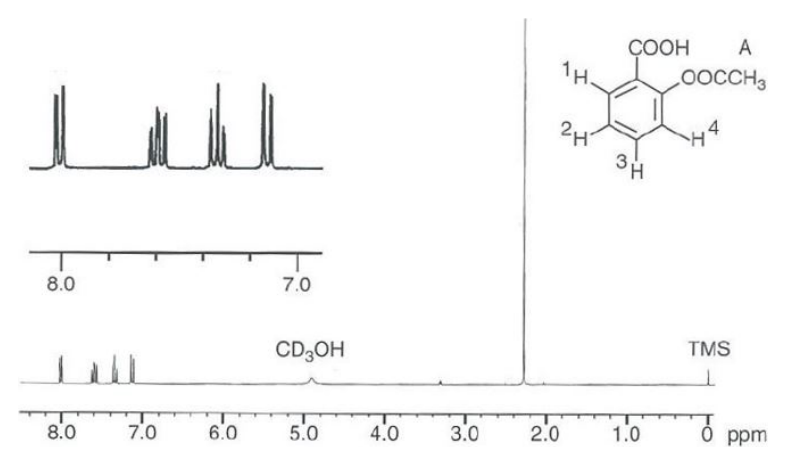
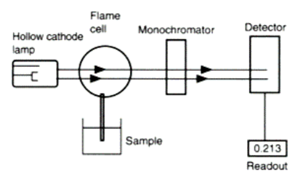
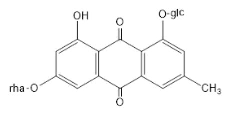
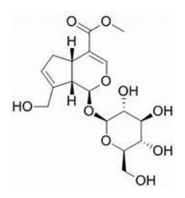
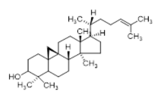
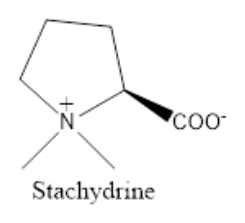

開卷有益 ／
藥師 ／ 藥物分析與生藥學 ／ 111 年第 2 次111 年第 2 次藥師藥物分析與生藥學試題與答案
這一頁是民國 111 年第 2 次藥師藥物分析與生藥學的整份歷屆試題，共 80 題，題目與標準答案出自考選部「國家考試試題及測驗式試題答案」開放資料，其中 78 題附有詳解。以下逐題列出題幹、選項與答案；要計時作答或記錄成績，請用線上練習。
考選部原始場次代碼：111100
線上作答這一科 →
全部 80 題
第 1 題
下列何者不能用無水滴定法進行含量測定？
（A） prednisolone（B） L-DOPA（C） codeine（D） phenobarbital答案：（A）
詳解與考點 正解：判別無水滴定法能否適用，先看待測物在非水溶媒中是否具有可產生明確終點的酸性或鹼性中心。（A）prednisolone 的羥基與酮基都不提供足以進行清楚非水酸鹼滴定的中心，因此不能用此法測定含量，故選 A。
B：（B）L-DOPA 具有胺基，可在適當非水酸性介質表現為可滴定的鹼性中心，並非不能使用無水滴定法。
C：（C）codeine 具有三級胺，可用非水酸滴定測定，弱鹼在非水介質中的鹼性表現正是此法的用途。
D：（D）phenobarbital 具有可解離的 imide 氫，可採非水鹼滴定處理，與不具明確酸鹼中心的 prednisolone 不同。
本題考點：無水滴定法（nonaqueous titration）——待測物須在所選非水溶媒中呈現足夠酸鹼性並形成可辨識終點，否則不宜套用；弱鹼的非水酸滴定（nonaqueous acidimetry）——三級胺等弱鹼在非水酸性介質較容易被定量質子化；弱酸的非水鹼滴定（nonaqueous alkalimetry）——imide 等弱酸性氫可藉較強鹼性滴定系統測定。
第 2 題
下列何者最不適合以非水酸滴定法分析？
（A） codeine（B） chlorpromazine（C） acetaminophen（D） sodium benzoate答案：（C）
詳解與考點 正解：非水酸滴定是以強酸在非水介質中滴定弱鹼。（C）acetaminophen 的醯胺氮因共振而鹼性很弱，酚羥基則偏弱酸性，缺乏可供非水酸滴定的鹼性中心，故選 C。
A：（A）codeine 的三級胺可接受質子，在非水酸滴定中能形成清楚的滴定反應，適合此法。
B：（B）chlorpromazine 側鏈上的三級胺提供可質子化中心，正是非水酸滴定常處理的弱鹼類型。
D：（D）sodium benzoate 的 benzoate 在適當非水酸性介質可表現為可滴定的鹼性物種；分辨關鍵在鹽類陰離子仍可接受質子，不等同於 acetaminophen 的中性醯胺結構。
本題考點：非水酸滴定（nonaqueous acidimetry）——先找可被強酸定量質子化的弱鹼性中心，再判斷是否適用；醯胺共振（amide resonance）——醯胺氮的孤對電子參與共振時鹼性大幅降低，不能把含氮化合物一律當成可酸滴定的鹼。
第 3 題
以酸鹼滴定分析1.0 M乙醯水楊酸溶液之含量時，下列何種指示劑較不適用？
（A） cresol red pKa 8.3（B） chlorophenol blue pKa 6.0（C） methyl orange pKa 3.4（D） phenolphthalein pKa 9.4答案：（C）
詳解與考點 正解：乙醯水楊酸是弱酸，以鹼滴定後的當量點落在偏鹼區域；指示劑的變色範圍必須接近滴定曲線急遽變化處。（C）methyl orange 的 pKa 為 3.4，變色發生在明顯酸性區域，遠早於當量點，因此較不適用，故選 C。
A：（A）cresol red 的 pKa 為 8.3，變色範圍接近弱酸以強鹼滴定的偏鹼終點，可作為合理選擇。
B：（B）chlorophenol blue 的 pKa 為 6.0，雖較終點偏酸，但仍比（C）methyl orange 接近當量點附近的變化區域，故非最不適用者。
D：（D）phenolphthalein 的變色區在偏鹼區域，符合乙醯水楊酸滴定當量點的酸鹼方向。
本題考點：酸鹼指示劑選擇（acid-base indicator selection）——指示劑變色範圍要落在當量點附近的陡峭區域，不能只看是否為常見指示劑；弱酸強鹼滴定（weak acid-strong base titration）——弱酸完全中和後其共軛鹼水解，終點通常偏鹼，據此排除酸性變色的指示劑。
第 4 題
下列何者為費氏（Karl Fischer）試劑之組成？
（A） iodide、sulfur dioxide、pyridine、methanol（B） iodide、sulfuric acid、imidazole、methanol（C） iodine、sulfur dioxide、pyridine、methanol（D） iodine、sulfuric acid、imidazole、methanol答案：（C）
詳解與考點 正解：經典費氏試劑的組成為（C）iodine、sulfur dioxide、pyridine 與 methanol。測定時由 iodine 參與水的氧化還原反應，sulfur dioxide、鹼性成分與醇性溶媒共同提供反應環境，故選 C。
A：（A）iodide 是 iodine 的還原態，不能取代費氏反應所需的 iodine。
B：（B）此組同時把 iodine 誤寫成 iodide，並以 sulfuric acid 取代 sulfur dioxide；即使 imidazole 可用於改良系統，也不能補正這兩個核心成分的錯置。
D：（D）此組含有 iodine，但仍以 sulfuric acid 取代 sulfur dioxide，缺少費氏反應所需的二氧化硫。
本題考點：費氏水分測定（Karl Fischer titration）——辨識經典組成時要同時記住 iodine、sulfur dioxide、鹼性成分與醇性溶媒，少一項或氧化態換錯都不成立；氧化態判讀（oxidation-state recognition）——iodine 與 iodide 的氧化態不同，分析試劑中不能因名稱相近而互換。
第 5 題
有關檸檬酸鹼金屬鹽分析之敘述，下列何者錯誤？
（A） 可將樣品熾灼成鹼金屬之氧化物和碳酸鹽（B） 將熾灼後所形成之碳酸鹽以直接滴定法測定（C） 可用過氯酸之非水滴定法測定（D） 使用非水滴定法測定不需預先將樣品熾灼答案：（B）
詳解與考點 正解：判準在熾灼後碳酸鹽的定量方式。（B）將熾灼後所形成之碳酸鹽以直接滴定法測定不正確；含量測定須以定量過量酸反應後再反滴定求得消耗量，不能直接把形成物當作單一終點物種，故選 B。
A：（A）檸檬酸鹼金屬鹽經熾灼可轉為鹼金屬的氧化物與碳酸鹽，這正是後續以無機殘渣進行定量的基礎。
C：（C）檸檬酸鹼金屬鹽可在適當非水系統以過氯酸測定，不必限定於熾灼後的殘渣分析。
D：（D）採非水滴定時是直接利用原樣品在該介質中的酸鹼反應，無須預先熾灼；兩種方法的前處理不同。
本題考點：熾灼後反滴定（ignition followed by back titration）——樣品轉成碳酸鹽後，遇到多步中和或終點不夠單純時，以已知過量滴定液再回滴較可靠；非水滴定（nonaqueous titration）——若原樣品可在非水介質直接產生明確酸鹼反應，不能把熾灼前處理誤當成必經步驟。
第 6 題
關於鹼滴定分析法之敘述，下列何者正確？
（A） 標準鹼液之消耗量最好為10～20 mL（B） 滴定液之當量濃度最好超過樣品溶液（C） 滴定有機酸時，以甲基紅當指示劑（D） 通常進行空白試驗校正答案：（D）
詳解與考點 正解：（D）通常進行空白試驗是正確敘述。扣除溶媒、試劑或吸收的 carbon dioxide 所消耗的標準鹼液後，才能取得樣品真正的滴定體積，故選 D。
A：（A）標準鹼液若僅消耗 10～20 mL，讀數的相對誤差較容易放大；滴定條件應使消耗體積足以維持良好精密度。
B：（B）滴定液的當量濃度若遠高於樣品溶液，終點前消耗體積會過小，不利於精確讀值；濃度應依樣品量適當配合。
C：（C）滴定有機酸時終點通常在偏鹼區域，methyl red 的變色範圍偏酸，不能作為一般鹼滴定有機酸的適當指示劑。
本題考點：空白試驗（blank determination）——凡滴定液可能被溶媒或背景反應消耗時，先測空白並從樣品滴定量扣除；滴定相對誤差（relative titration error）——選擇滴定液濃度時要避免消耗體積過小，否則讀數誤差會被放大；指示劑終點（indicator endpoint）——滴定弱有機酸時，指示劑變色範圍應跟著偏鹼當量點選擇。
第 7 題
中華藥典中有關含量測定之檢品取量，若敘述為「精確取量約250 mg」，則下列取量何者不當？
（A） 226.5 mg（B） 250.0 mg（C） 265.2 mg（D） 278.3 mg答案：（D）
詳解與考點 正解：藥典的「精確取量約 250 mg」可取在標示量的 90%～110% 範圍。可接受範圍為 250 mg × 0.90 = 225.0 mg 至 250 mg × 1.10 = 275.0 mg；（D）278.3 mg 超過上限，故選 D。
A、C：（A）226.5 mg 與（C）265.2 mg 都落在 225.0～275.0 mg 之內，符合「約 250 mg」的取量範圍。
B：（B）250.0 mg 正是標示的中心取量，當然適當。
本題考點：藥典取樣語句（pharmacopoeial weighing instruction）——看到「精確取量約 X」時，先以 X 的 90% 與 110% 算出容許範圍，再逐一核對實際秤量；百分比容許範圍（percentage tolerance）——判斷邊界值時必須保留單位與小數，不能只憑數字接近程度目測。
第 8 題
中華藥典記載的甲氧基測定係以滴定法進行，其步驟包括加入氫碘酸（hydroiodic acid）煮沸生成碘甲烷 （methyl iodide），再經溴（bromine）氧化生成碘酸（iodic acid），最後以下列何種溶液進行滴定？
（A） 過錳酸鉀溶液（B） 硫代硫酸鈉溶液（C） 氯化鈉溶液（D） 過氯酸之乙酸溶液答案：（B）
詳解與考點 正解：甲氧基測定中，methyl iodide 經氧化相關步驟後所形成的 iodine 以（B）硫代硫酸鈉滴定；硫代硫酸鈉將 iodine 還原為 iodide，故選 B。
A：（A）過錳酸鉀是強氧化劑，不是本反應序列最後用來還原定量 iodine 的滴定液。
C：（C）氯化鈉不具此氧化還原滴定所需的反應性，無法作為終點滴定液。
D：（D）過氯酸之乙酸溶液用於非水酸滴定弱鹼，與本題的 iodine 氧化還原定量系統不同。
本題考點：甲氧基測定（methoxy determination）——看到氫碘酸裂解生成 methyl iodide 的流程時，要接續辨識 iodine 的氧化還原滴定；碘量法（iodometry）——有 iodine 需要定量時，以硫代硫酸鈉還原滴定是基本判準；分析方法分類（analytical method classification）——先分清氧化還原滴定與非水酸鹼滴定，不能因同為滴定法而混用試劑。
第 9 題
某有機酸在乙醚及水中之分配係數為 4（C乙醚 / C水 = 4），若1.5%之此有機酸水溶液100 mL以等容積乙醚萃 取，則有多少毫克的有機酸仍留在水層？
（A） 0.3（B） 1.2（C） 300（D） 12000答案：（C）
詳解與考點 正解：分配係數為 C乙醚/C水 = 4，且兩層體積相同，因此萃取平衡時乙醚層與水層的有機酸量比為 4:1。初始量先換算為 1.5 g/100 mL × 100 mL = 1.5 g = 1,500 mg；水層保留量 = 1,500 mg × 1/(4 + 1) = 300 mg，這對應（C）300 mg，故選 C。
A：（A）0.3 mg 是把初始的 1.5 g 誤當成 1.5 mg 後得到的結果，漏掉 g 轉為 mg 的 1,000 倍換算。
B：（B）1.2 對應的是乙醚層的 1.2 g，而題目問的是水層且單位為 mg；層別與單位都不符。
D：（D）12,000 mg 大於原本全部的 1,500 mg，已違反萃取前後總質量守恆。
本題考點：液液萃取分配係數（liquid-liquid partition coefficient）——先把 K 與兩相體積換成兩層的量比，再用總量分配，不可直接把濃度比當成剩餘百分比；單位換算（unit conversion）——在萃取計算中先統一 g 與 mg，否則答案常會差 1,000 倍；質量守恆（mass balance）——任何一層的量都不得大於萃取前的總量。
第 10 題
關於生物鹼的分析試劑與其主成分之配對，下列何者正確？
（A） Valser's reagent－mercuric chloride（B） Wagner's reagent－mercuric iodide（C） Mayer's reagent－mercuric potassium iodide（D） Liebermann reagent－iodine solution答案：（C）
詳解與考點 正解：（C）Mayer's reagent 的主成分為 mercuric potassium iodide，能與生物鹼形成沉澱，因此為正確配對，故選 C。
A：（A）Valser's reagent 在常見生藥學試劑表中的主成分列為 potassium mercuric iodide，與 Mayer's reagent 同屬汞碘系統的生物鹼沉澱試劑，並非 mercuric chloride；含汞試劑不能因都含 mercury 而任意互換，故此配對不正確。
B：（B）Wagner's reagent 的關鍵成分是 iodine 與 potassium iodide，並非 mercuric iodide。
D：（D）Liebermann reagent 不是 iodine solution；以 iodine 系統檢出生物鹼的配方應與（B）Wagner's reagent 區分。
本題考點：生物鹼沉澱試劑（alkaloid precipitation reagents）——遇到試劑配對題時，逐一鎖定中心離子或 iodine 系統，不以「都含鹵素或重金屬」作模糊判斷；Mayer's reagent——看到 potassium mercuric iodide 即連結生物鹼沉澱反應，並與 Wagner's reagent 的 iodine/potassium iodide 系統區分。
第 11 題
利用下列何種質譜分析儀可進行MS3之質譜分析？
（A） 雙聚焦磁場式（double focusing magnetic sector）（B） 離子阱（ion trap）（C） 飛行時間（time of flight）（D） 三段式四極柱（triple quadrupole）答案：（B）
詳解與考點 正解：MS3 必須能先選取前驅離子、裂解得到產物離子，再選取其中一個產物離子進行下一次裂解。（B）ion trap 可在同一離子阱內重複隔離與碰撞誘導裂解，具備 MS^n 能力，故選 B。
A：（A）雙聚焦磁場式儀器可提供高解析度質量分析，但基本架構不具 ion trap 那種連續選離與再裂解的 MS3 操作。
C：（C）time of flight 以飛行時間量測 m/z，單獨的 TOF 架構不提供逐級隔離產物離子再碎裂的 MS3 流程。
D：（D）triple quadrupole 的 Q1、Q2、Q3 可完成一次前驅離子選擇、碰撞與產物分析的 MS/MS；其第三段是分析器，不是對已選產物再進行一次碎裂的 MS3 階段。
本題考點：多階質譜（multistage mass spectrometry）——要做 MS3 需至少兩輪「選離子→碎裂」操作，能反覆操作的 ion trap 最具代表性；串聯質譜（tandem mass spectrometry）——triple quadrupole 的三段名稱不等於 MS3，應看是否真的有第二次產物離子隔離與碎裂。
第 12 題
Aspirin之氫核磁共振譜如下圖，約在8.0 ppm的氫訊號為下列何者？

（A） 1（B） 2（C） 3（D） 4答案：（A）
詳解與考點 正解：圖中標示 H1 至 H4 四個芳香氫，1H-NMR 光譜左上角放大圖顯示 8.0–7.0 ppm 間有四組訊號。羧酸（COOH）為強拉電子基，鄰位氫因去屏蔽效應化學位移最大，對照結構圖，與 COOH 鄰接的即為 H1，故最靠近 8.0 ppm、化學位移最大的訊號屬於 H1，選 A。
B：H2 與 COOH 相隔一個碳（meta 位），去屏蔽效應較 H1 弱，化學位移低於 H1。
C：H3 與 acetoxy（OOCCH3）相鄰、離 COOH 最遠，acetoxy 之拉電子效應本已弱於 COOH，加上位置更遠，化學位移在四者中最低。
D：H4 與 acetoxy 鄰接（ortho 位），受 acetoxy 拉電子誘導但強度不及 COOH，化學位移介於 H1 與 H3 之間，仍不及 H1。
本題考點：芳香環取代基對鄰位氫化學位移的影響——拉電子基（COOH、酯基）使鄰位氫去屏蔽、訊號往低場（高 ppm）移動，效應強弱依基團拉電子能力遞減；1H-NMR 偶合型態——鄰位偶合產生的雙重峰組可用來對應環上氫的相對位置。
第 13 題
根據Karplus公式，下列何種雙面夾角的偶合常數（3J）值最大？
（A） 180°（B） 45°（C） 90°（D） 60°答案：（A）
詳解與考點 正解：Karplus 公式描述鄰位質子間的 3J 與雙面夾角的關係；（A）180° 的 anti 構形中，軌域幾何最有利於傳遞偶合，3J 最大，故選 A。
B：（B）45° 已偏離 anti 構形，偶合常數小於 180° 時的最大值。
C：（C）90° 附近是 Karplus 曲線的低值區，與最大偶合常數相反。
D：（D）60° 的偶合常數可有一定大小，但仍不及 180° 的 anti 幾何關係。
本題考點：Karplus 公式（Karplus equation）——判斷鄰位 3J 時先看雙面夾角，anti 的 180° 對應最大值，約 90° 則接近低值；構形與偶合常數（conformation-coupling relationship）——NMR 題遇到相鄰質子時，以二面角而非單看鍵數來比較裂分間距。
第 14 題
在1H-核磁共振譜中，下列結構中被圈選到的質子理論上會呈現何種多重峰訊號？
（A） octet（B） doublet of septet（C） septet（D） sextet答案：（B）
第 15 題
關於旋光度測量之敘述，下列何者錯誤？
（A） 光源常使用鈉燈（B） 使用Nicol prism做為光極化物質（C） 溫度和溶劑對分析結果影響大（D） 非光學活性物質亦有極化現象答案：（D）
詳解與考點 正解：旋光度測量的是光學活性物質使平面偏振光旋轉的角度。（D）「非光學活性物質亦有極化現象」將偏振光本身與旋光現象混為一談；非光學活性物質在非手性條件下不會產生可測得的旋光度，敘述錯誤，故選 D。
A：（A）鈉燈可提供穩定的單色光，是旋光度測量常用的光源。
B：（B）Nicol prism 可作為偏振器，將一般光轉成平面偏振光以供旋光測量。
C：（C）溫度與溶劑會改變分子構形或溶質與溶媒的作用，因此會影響測得的旋光度。
本題考點：旋光度（optical rotation）——先確認樣品是否具光學活性，再判斷是否會使平面偏振光的偏振面旋轉；偏振器（polarizer）——偏振器負責製備平面偏振光，樣品是否旋轉偏振面則取決於其光學活性；比旋光度條件（specific rotation conditions）——比較數值時要一併核對溫度、溶劑與濃度等測定條件。
第 16 題
關於紫外光微分光譜的敘述，下列何者錯誤？
（A） 本技術僅適用於簡單的光譜分析（B） 微分的主要作用是去除underlying broad absorption band（C） 一次微分光譜的最高處位在原光譜的斜率最大處（D） 二次微分光譜的最低處是相對於原光譜的最大吸收處答案：（A）
詳解與考點 正解：紫外光微分光譜特別適合處理重疊訊號與寬廣背景吸收，可提高相鄰吸收峰的辨識度；（A）說它僅適用於簡單光譜分析，恰與此技術的用途相反，故選 A。
B：（B）微分可抑制緩慢變化的 underlying broad absorption band，使疊加在其上的較窄吸收特徵更容易判讀。
C：（C）一次微分光譜的正、負極值對應原始光譜斜率最大的區域，這是由微分的數學意義直接得到的關係。
D：（D）對一般正向吸收峰而言，二次微分光譜的最低處會對應原始光譜的最大吸收位置。
本題考點：微分光譜法（derivative spectroscopy）——當主峰重疊或背景帶過寬時，用微分光譜放大斜率差異並降低背景干擾；一次與二次微分（first- and second-derivative spectra）——一次微分看原譜斜率極值，二次微分以極值定位原譜吸收峰中心。
第 17 題
關於UV-Vis光譜法的應用，下列何者最不適合？
（A） 溶離度試驗（B） 藥品主成分含量測定（C） pKa測定（D） 官能基鑑定答案：（D）
詳解與考點 正解：（D）官能基鑑定最不適合以 UV-Vis 進行。UV-Vis 主要提供吸收強度與最大吸收波長的資訊，適合定量與追蹤光譜隨環境改變的變化，卻缺乏足以專一鑑定官能基的指紋資訊，故選 D。
A：（A）溶離度試驗可在不同時間點以 UV-Vis 測量溶液濃度，作為藥物釋放量的定量依據。
B：（B）藥品主成分若有適當吸收，可依吸光度與濃度關係進行含量測定，是 UV-Vis 的常見用途。
C：（C）pKa 測定可利用化合物在不同 pH 下離子化所造成的吸收光譜變化，因此可使用 UV-Vis 進行。
本題考點：紫外可見光定量（UV-Vis quantitation）——需要濃度、溶離量或吸光度變化時，先判斷待測物是否有可量測吸收；光譜鑑定能力（spectral identification specificity）——官能基的專一鑑定優先考慮 IR 或 NMR，不能把 UV-Vis 的吸收峰當成完整結構指紋；酸解離常數（pKa determination）——若離子化前後光譜不同，可用 pH 與吸收變化的關係求得 pKa。
第 18 題
以UV分析相同濃度的phenylephrine時，在0.1 M HCl及0.1 M NaOH中測得之最大吸收處的波長分別為273、 292 nm，吸光值（A）分別為110、182。在鹼性溶液中造成之差異係因下列何種現象產生？
（A） hyperchromic and bathochromic shifts（B） hypochromic and hypsochromic shifts（C） hyperchromic and hypsochromic shifts（D） hypochromic and bathochromic shifts答案：（A）
詳解與考點 正解：鹼性溶液中 λmax 由 273 nm 移到 292 nm，為往長波長移動的 bathochromic shift；吸光值由 110 增至 182，為吸收強度增加的 hyperchromic shift，因此（A）hyperchromic and bathochromic shifts 同時符合，故選 A。
B：（B）hypochromic and hypsochromic shifts 分別表示吸收強度下降與往短波長移動，兩個方向都與題目數據相反。
C：（C）hyperchromic 正確描述吸光值增加，但 hypsochromic 是短波長位移，與 273 nm 到 292 nm 的長波長位移不符。
D：（D）bathochromic 正確描述長波長位移，但 hypochromic 表示吸收強度下降，與吸光值 110 到 182 的增加相反。
本題考點：吸收波長位移（bathochromic and hypsochromic shifts）——λmax 增加判為 bathochromic，減少判為 hypsochromic；吸收強度變化（hyperchromic and hypochromic shifts）——吸光值增加判為 hyperchromic，下降判為 hypochromic；酸鹼型態與 UV-Vis（acid-base effects in UV-Vis）——比較不同 pH 的光譜時，將波長位移與吸收強度改變分開判讀。
第 19 題
進行抗體藥物品管時，下列質譜游離法何者最適當？
（A） 電子撞擊游離法（electron impact ionization, EI）（B） 正離子化學游離法（positive ion chemical ionization, PICI）（C） 常壓化學游離法（atmospheric pressure chemical ionization, APCI）（D） 電灑游離法（electrospray ionization, ESI）答案：（D）
詳解與考點 正解：抗體藥物屬分子量大、熱不穩定的生物大分子，質譜品管須採能在溶液中溫和產生多價離子的游離法。ESI 可把抗體或其胜肽片段帶入氣相並形成多重帶電離子，使高分子質量可落在儀器可量測的 m/z 範圍，故選 D。
A：EI 是高能電子撞擊造成大量碎裂的硬游離法，通常適用揮發且耐熱的小分子，不適於完整抗體的品管。
B：PICI 雖比 EI 溫和，但仍主要服務可汽化的小分子；抗體不易先完整汽化，並非首選。
C：APCI 以氣相反應游離，較適合中低極性、可霧化後汽化的小分子；分辨關鍵在抗體需要 ESI 的溶液相軟游離與多重帶電能力。
本題考點：電灑游離法（electrospray ionization, ESI）——分析蛋白質、胜肽等熱不穩定大分子時，選擇可形成多重帶電離子的軟游離法；電子撞擊游離法（electron impact ionization, EI）——待測物必須能汽化且可承受強碎裂時才適用；質荷比（mass-to-charge ratio, m/z）——高分子以多重帶電形式量測時，應以電荷數降低表觀 m/z。
第 20 題
有關拉曼光譜法之敘述，下列何者錯誤？
（A） 入射光與偵測光之方向相互垂直（B） 分析物須具備良好的發色基（chromophore）（C） 使用近紅外光（near-IR）區光源激發可避免螢光干擾（D） 所檢測之訊號為散射光答案：（B）
詳解與考點 正解：拉曼光譜測量的是分子使入射光發生非彈性散射後的頻率差，關鍵是振動時極化率改變，並不以可見或紫外發色基為必要條件。（B）將 UV-Vis 的 chromophore 條件套到拉曼分析，因此錯誤，故選 B。
A：常見的拉曼量測可將偵測方向設於與入射光垂直的 90°，藉此收集散射光並減少直射光干擾，敘述可成立。
C：近紅外光激發的光子能量較低，較不易激發螢光，因此常用來降低螢光背景干擾，敘述正確。
D：Raman 訊號本質上是散射光中相對入射光具有頻率位移的成分，不是透射或吸收光，敘述正確。
本題考點：拉曼散射（Raman scattering）——遇到以散射光頻率差辨識分子振動的題目時，看極化率改變而非是否有發色基；螢光干擾（fluorescence interference）——樣品螢光背景過強時，改用較長波長的 near-IR 激發可降低干擾；量測幾何（measurement geometry）——判讀拉曼儀器配置時，偵測器應收集散射光而非直射入射光。
第 21 題
中華藥典有關折光率測定之敘述，下列何者錯誤？
（A） 物質折光率（n）通常係指光線在空氣中與在該物質中之速度比（B） 折光率不受溫度影響（C） 測定時至少量測三次，求其平均值（D） 折光率測定可用於鑑別藥物之純度答案：（B）
詳解與考點 正解：折光率會隨測定溫度改變，因為溫度影響液體密度與分子排列，進而改變光在介質中的傳播速度；測定時須控制並記錄溫度。（B）說不受溫度影響與此相反，因此錯誤，故選 B。
A：相對折光率可表示光在空氣中的速度與在檢品中的速度之比，光在檢品中較慢時折光率大於 1，敘述正確。
C：依題目所稱中華藥典的測定作業，至少量測三次後取平均值，有助降低單次讀值誤差，敘述正確。
D：純度改變會改變檢品組成與光學性質，折光率可作為鑑別與純度評估的物理常數之一，敘述正確。
本題考點：折光率（refractive index）——以光在參考介質與檢品中的速度比判讀時，先確認測定波長與溫度；溫度控制（temperature control）——用折光率比較批次或純度時，測定溫度不同就不可直接比較；重複量測（replicate measurement）——物理常數測定須以多次讀值的平均值降低隨機誤差。
第 22 題
下列關於近紅外光分析（near-infrared analysis, NIRA）之敘述，何者錯誤？
（A） 可測定檢品之顆粒大小（B） 可檢測藥品之攪拌均勻度（C） 可測定製劑中的活性成分（D） 係破壞性的藥品多形體檢測法答案：（D）
詳解與考點 正解：近紅外光分析利用檢品對近紅外區光的吸收與散射訊息配合校正模型進行判讀，可在不破壞樣品的情況下評估製程與固態性質。（D）把 NIRA 說成破壞性多形體檢測法，與其非破壞性特徵相反，故選 D。
A：顆粒大小會改變光散射型態，NIRA 可利用此訊息建立顆粒大小的預測模型，敘述正確。
B：混合物中各成分的近紅外光譜可反映空間或批次差異，因此可用於評估攪拌均勻度，敘述正確。
C：活性成分的特徵吸收可經校正模型轉為含量預測，故 NIRA 可用於製劑中活性成分的定量分析。
本題考點：近紅外光分析（near-infrared analysis, NIRA）——要做原料或製程快速篩檢時，利用光譜加校正模型可同時處理含量、均勻度與粒徑訊息；非破壞性檢測（non-destructive testing）——樣品須保留供後續使用或重測時，優先辨認不需溶解、萃取或破壞樣品的方法；化學計量學（chemometrics）——NIRA 的定量結果須由已知樣品建立的校正模型支持，不能只靠單一吸收峰。
第 23 題
有關螢光測定法之敘述，下列何者錯誤？
（A） 檢品濃度不應太高（B） 溶液含氯離子時，會降低螢光強度（C） 檢測溫度與螢光強度有關（D） 在caffeine存在時，riboflavin的螢光強度會增強答案：（D）
詳解與考點 正解：riboflavin 的螢光會受共存物質的動態或靜態淬熄影響；caffeine 與 riboflavin 共存時造成淬熄，螢光強度應下降而非增強。（D）把淬熄方向寫反，故選 D。
A：檢品濃度過高會發生內濾效應、再吸收或自我淬熄，使螢光強度不再與濃度成正比，因此應避免使用過高濃度。
B：氯離子可造成螢光淬熄而降低訊號，故共存氯離子會影響螢光強度，敘述正確。
C：溫度改變分子碰撞與非輻射失活的機率，螢光強度會隨之改變，敘述正確。
本題考點：螢光淬熄（fluorescence quenching）——比較添加物前後的螢光時，訊號下降應優先判斷為淬熄而非分析物增加；內濾效應（inner-filter effect）——螢光定量的濃度過高時，應稀釋至訊號與濃度近似線性的範圍；非輻射失活（non-radiative deactivation）——溫度或碰撞條件改變時，須預期螢光量子產率可能改變。
第 24 題
下圖是何種儀器之裝置示意圖？

（A） 紫外光－可見光光譜儀（B） 螢光光譜儀（C） 原子吸收光譜儀（D） 紅外光光譜儀答案：（C）
詳解與考點 正解：圖中依序為 hollow cathode lamp（光源）、flame cell（火焰原子化）、monochromator（單光器）與 detector（偵測器），這組元件配置——尤其 hollow cathode lamp 搭配火焰原子化——是原子吸收光譜儀（AAS）的典型架構，光源發出待測元素特徵波長的光，經火焰中原子化後的基態原子吸收部分光，再由單光器濾出特徵波長送偵測器讀出吸光值，故選 C。
A：紫外光－可見光光譜儀以氘燈或鎢絲燈為連續光源、樣品置於石英槽中，並無 hollow cathode lamp 與火焰原子化裝置。
B：螢光光譜儀需設置激發光源與呈直角配置的發射偵測器，量測的是螢光發射而非吸收，架構與圖中不同。
D：紅外光光譜儀以 globar 或 Nernst glower 等紅外光源為主，樣品多以鹽片或 ATR 方式量測，不會使用 hollow cathode lamp 或火焰原子化。
本題考點：原子吸收光譜儀（AAS）之元件辨識——hollow cathode lamp 是 AAS 專屬光源，發出待測元素的特徵線光譜；火焰原子化（flame atomization）將樣品轉為基態自由原子供光吸收，這兩項合併出現即可判定儀器種類。
第 25 題
下列質譜的離子化方法中，何者最不易提供化合物之分子量？
（A） chemical ionization（B） electrospray ionization（C） fast atom bombardment ionization（D） electron impact ionization答案：（D）
詳解與考點 正解：要由質譜取得化合物分子量，需先能觀察到分子離子或準分子離子。EI 以高能電子撞擊分子，常造成廣泛碎裂，使分子離子峰微弱或消失，因此最不易直接提供分子量，故選 D。
A：chemical ionization 較溫和，常形成如 [M+H]+ 的準分子離子，通常可據以推得分子量。
B：electrospray ionization 可形成帶一個或多個電荷的離子；由電荷態與 m/z 可回推分子量，適合極性或大分子分析。
C：fast atom bombardment ionization 屬較軟的解吸游離方式，分子或準分子離子比 EI 較容易保留。
本題考點：硬游離法（hard ionization）——需要豐富碎片做結構鑑定時可用 EI，但不可假定一定看得到分子離子；軟游離法（soft ionization）——優先取得完整分子量時，選擇能保留分子或準分子離子的 CI、ESI 或 FAB；準分子離子（quasi-molecular ion）——看到 [M+H]+ 或相近加合離子時，須扣除加合物的質量再判定中性分子量。
第 26 題
使用固相微萃取法（solid-phase microextraction, SPME）萃取尿液中的ketamine，再用GC-MS進行定量，下列 敘述何者錯誤？
（A） SPME的設計只適用於頂空萃取（B） 可以加入衍生化步驟增加ketamine的揮發性（C） polydimethylsiloxane為常用的親脂性SPME吸附材質（D） SPME通常搭配熱脫附法進樣於GC-MS答案：（A）
詳解與考點 正解：SPME 可讓塗層直接接觸液體檢品，也可在檢品上方的氣相進行頂空萃取，兩種模式分別適合不同基質與揮發性。（A）說其設計只適用頂空萃取，忽略直接浸入式 SPME，故選 A。
B：在適當的衍生化策略下，可將 ketamine 轉為較適合 GC 分析的衍生物，以改善揮發或層析行為，敘述正確。
C：polydimethylsiloxane 為常見非極性、親脂性的 SPME 塗層，可藉分配萃取較疏水的分析物，敘述正確。
D：SPME 萃取後常將纖維置入 GC 的加熱進樣口，以熱脫附方式把分析物送入 GC-MS，敘述正確。
本題考點：固相微萃取（solid-phase microextraction, SPME）——依分析物與基質選擇直接浸入或頂空模式，不可把 SPME 限縮為單一操作；頂空萃取（headspace extraction）——基質複雜或分析物具揮發性時，讓纖維不直接接觸液體可減少污染；熱脫附（thermal desorption）——SPME 接 GC-MS 時，利用加熱將塗層上的分析物釋放進載氣流。
第 27 題
相較於HPLC，利用UPLC（ultra-high-performance liquid chromatography）進行acetaminophen的不純物分析 時，下列敘述何者錯誤？
（A） UPLC管柱充填物之粒徑較大（B） 同管柱長度下，UPLC有較大的理論板數（C） UPLC系統需要較大的幫浦壓力（D） UPLC具更高的工作效率答案：（A）
詳解與考點 正解：UPLC 以較小的管柱填料粒徑降低理論板高，因此在相同管柱長度下可得到較多理論板數與較高效率；代價是流動阻力上升。（A）說 UPLC 的填料粒徑較大，與其提高效率的設計相反，故選 A。
B：填料粒徑較小可降低理論板高，所以同管柱長度下 UPLC 的理論板數較大，敘述正確。
C：較小粒徑使流動相通過填料床的壓降增大，UPLC 系統須具備較高耐壓與幫浦壓力，敘述正確。
D：理論板數增加可使峰形較窄、分離較快或較佳，UPLC 因而具有較高工作效率。
本題考點：超高效液相層析（ultra-high-performance liquid chromatography, UPLC）——要提高同管長的分離效率時，選較小填料粒徑以降低理論板高；理論板數（theoretical plate number, N）——比較相同管柱長度的效率時，N 較大代表峰較窄、分離潛力較高；系統壓力（system pressure）——填料變小會提高壓降，方法轉用 UPLC 時須同時確認儀器耐壓。
第 28 題
在分析確效（validation）中，回收率（recovery）與下列何者有關？
（A） accuracy（B） precision（C） linearity（D） system suitability答案：（A）
詳解與考點 正解：回收率是把已知量的分析物加入基質後，比較實測回收量與加入量的比例；它反映測值接近真值的程度，故與 accuracy 有關，故選 A。
B：precision 評估重複量測彼此是否接近，重點是離散程度而非加入量是否被完整測回。
C：linearity 評估濃度與儀器反應是否呈適當比例關係，不能由單一回收率直接判定。
D：system suitability 是上機前確認層析系統是否達到預定效能的檢查，與加標回收所評估的準確度不同。
本題考點：回收率（recovery）——以實測回收量除以已知加入量判斷樣品前處理與測定結果是否接近真值；準確度（accuracy）——要驗證方法的系統性偏差時，優先看回收率或與參考值的接近程度；精密度（precision）——要判斷重複分析是否穩定時，看標準差或變異係數，不以回收率取代。
第 29 題
下列有關氣相層析法之敘述，何者正確？
（A） 具高分辨率之優點（B） 只能在常溫下測量氣態物質（C） 火焰離子化檢測器對有機鹵素化合物具有高選擇性（D） GC-MS適用於分析高分子化合物答案：（A）
詳解與考點 正解：氣相層析以高效率管柱分離可揮發、耐熱的化合物，具有高理論板數與良好分辨率的優點。（A）符合 GC 的核心分離特性，故選 A。
B：GC 並非只能在常溫下測量原本為氣態的物質；液體或固體只要能在進樣口與管柱溫度下揮發且不分解，也能分析。
C：FID 對多數可燃性有機物具有廣泛反應，並非對有機鹵素化合物具高選擇性；遇到鹵素的選擇性偵測應聯想到 ECD。
D：高分子化合物常不易揮發且可能受熱分解，GC-MS 通常不適合作為其直接分析方法。
本題考點：氣相層析（gas chromatography, GC）——待測物可揮發且具熱穩定性時，GC 是高效率分離的優先選項；火焰離子化檢測器（flame ionization detector, FID）——判斷偵測器選擇性時，FID 對多數有機物廣泛響應而非專一辨識鹵素；電子捕獲偵測器（electron capture detector, ECD）——需要對具高電子親和力的鹵素化合物提高選擇性時，才優先考慮 ECD。
第 30 題
在矽膠層析中，以二氯甲烷（A）與正己烷（B）混合溶媒為移動相，在下列何種體積比例（A：B）下，移 動相之極性最大？
（A） 10：1（B） 2：1（C） 1：2（D） 1：10答案：（A）
詳解與考點 正解：在矽膠正相層析中，二氯甲烷比正己烷極性高，移動相中二氯甲烷比例愈高，整體極性愈大。10:1 時二氯甲烷的體積分率為 10/(10+1) = 90.9%，是四組中最高，故選 A。
B：2:1 時二氯甲烷體積分率為 2/(2+1) = 66.7%，低於（A）10:1，移動相極性較小。
C：1:2 時二氯甲烷體積分率為 1/(1+2) = 33.3%，正己烷比例已較高，極性更低。
D：1:10 時二氯甲烷體積分率為 1/(1+10) = 9.1%，為四組中最低，故不可能有最大極性。
本題考點：正相層析（normal-phase chromatography）——固定相為高極性矽膠時，比較混合移動相先找極性較高的溶媒比例；體積分率（volume fraction）——混合溶媒極性題應以各溶媒體積除以總體積後比較，不能只看比例中的單一數字；溶媒強度（solvent strength）——正相系統中提高較極性溶媒比例通常會提升洗脫能力。
第 31 題
C6H5CH2COOH如以離子對－逆相層析分離法進行分析定量時，移動相加入下列何者，其滯留時間最長？
（A） C7H15SO3-（B） (CH3)4N+（C） (C4H9)4N+（D） Cl-答案：（C）
詳解與考點 正解：C6H5CH2COOH 在離子對逆相層析的設定下可視為帶負電的羧酸根，應加入帶正電且烷基鏈長的離子對試劑，形成較疏水的離子對後增強在逆相固定相的滯留。（C）四丁基銨同時具有相反電荷與四條丁基鏈，最能延長滯留時間，故選 C。
A：C7H15SO3− 為陰離子，不能與帶負電的待測羧酸根形成所需的異電荷離子對，且其電荷方向不合。
B：四甲基銨雖為陽離子，能提供相反電荷，但甲基鏈遠比（C）短，形成的離子對疏水性不足，滯留延長效果較小。
D：Cl− 與待測物的陰離子型態同號，既不能形成異電荷離子對，也沒有長烷基鏈可增加疏水滯留。
本題考點：離子對逆相層析（ion-pair reversed-phase chromatography）——離子型待測物在逆相管柱滯留不足時，選擇電荷相反的離子對試劑；離子對試劑（ion-pair reagent）——比較同電荷的季銨鹽時，烷基鏈愈長通常使離子對愈疏水、滯留愈強；羧酸解離（carboxylic acid ionization）——判斷離子對電荷方向前，先辨認待測物在分析條件下的離子型態。
第 32 題
於連續監測活體動物腦中dopamine濃度時，結合下列何種技術最適合？
（A） 超臨界流體萃取（B） 微透析（C） 固相萃取（D） 液相－液相分配答案：（B）
詳解與考點 正解：連續監測活體動物腦中的 dopamine，方法必須能在腦組織內長時間、低侵入性地重複取得細胞外液樣本。微透析以半透膜探針灌流並定時收集透析液，可連續追蹤神經傳導物質濃度，故選 B。
A：超臨界流體萃取是樣品前處理或萃取技術，不能在活體腦內持續採集細胞外液。
C：固相萃取通常用於離線淨化與濃縮已取得的樣品，並非植入式連續監測技術。
D：液相－液相分配須將樣品與兩相溶媒混合後分離，適用離線萃取，無法直接在活體腦內連續量測。
本題考點：微透析（microdialysis）——要連續量測活體組織細胞外小分子時，以半透膜探針重複收集透析液；神經傳導物質（neurotransmitter）——腦內 dopamine 等濃度隨時間變化時，應選擇能建立時間序列的取樣方法；樣品前處理（sample preparation）——萃取與淨化方法可改善後續分析，但不能取代活體連續取樣。
第 33 題
以毛細管電泳分析法分析中性類固醇混合物時，下列何種分離條件最適合？
（A） 5 mM pH 8.0磷酸緩衝溶液（B） 5 mM pH 7.5磷酸緩衝溶液，內含0.05 mM sodium dodecyl sulphate（C） 5 mM pH 8.0硼酸緩衝溶液，內含0.01 mM β-cyclodextrin（D） 5 mM pH 7.5硼酸緩衝溶液，內含10%甲醇答案：（B）
詳解與考點 正解：中性類固醇在一般毛細管區帶電泳中幾乎沒有自身電泳遷移率，須加入帶電微胞作為偽固定相，使各類固醇依疏水性不同在微胞與水相間分配。（B）含 sodium dodecyl sulphate，可形成陰離子微胞進行微胞電動層析，最適合分離中性類固醇，故選 B。
A：單純磷酸緩衝液沒有提供微胞或其他可分配的偽固定相，中性類固醇難以依一般區帶電泳有效分離。
C：β-cyclodextrin 可對部分客體形成包合，但中性的 β-cyclodextrin 本身不帶電，會隨電滲流與中性類固醇一同移動，難以造成遷移速率差異；除非改用帶電的 cyclodextrin 衍生物作為載體，（C）的條件與中性類固醇的分離需求不符。
D：加入甲醇可改變溶媒性質，卻未建立可讓中性分析物差異分配的帶電微胞，分離能力有限。
本題考點：微胞電動層析（micellar electrokinetic chromatography, MEKC）——分析中性化合物時，在緩衝液加入帶電界面活性劑建立微胞偽固定相；sodium dodecyl sulphate（SDS）——需要陰離子微胞時，SDS 可使中性分析物按疏水性產生不同分配；毛細管區帶電泳（capillary zone electrophoresis, CZE）——分析物若不帶電，不能只靠自身電泳遷移率期待有效分離。
第 34 題
在液相層析中，下列何項參數不受層析管長度影響？
（A） 理論板數（B） 理論板高（HETP）（C） 滯留時間（D） 解析度（Rs）答案：（B）
詳解與考點 正解：理論板高 HETP 是每一個理論板所對應的管柱長度，可寫為 HETP = L/N。在填料、流速與其他操作條件相同時，管柱加長會使理論板數隨之增加，HETP 本身不因管長而改變，故選 B。
A：理論板數 N 約與管柱長度 L 成正比，管柱較長時可累積較多理論板，因此會受管長影響。
C：待測物通過更長的管柱需要更久時間，滯留時間會隨管柱長度增加。
D：解析度與理論板數有關；在其他條件固定時，增加管長會提高 N，因而影響 Rs。
本題考點：理論板高（height equivalent to a theoretical plate, HETP）——比較填料效率時，以每單位長度的 HETP 判斷，不把單純加長管柱誤認為效率改善；理論板數（theoretical plate number, N）——其他條件相同時，N 會隨管柱長度增加；解析度（resolution, Rs）——要用加長管柱改善分離時，須預期保留時間與壓降也會改變。
第 35 題
下列何者是液相層析法中，產生波峰變寬的原因？
（A） 在動相中，待測物的擴散係數愈小（B） 靜相顆粒愈小，形狀愈規則（C） 靜相被覆愈薄且均勻（D） 流速愈慢答案：（A）
詳解與考點 本題經考選部公告一律給分。液相層析波峰變寬之成因，依范氏方程式（van Deemter equation）分析，(D)流速愈慢會延長分子於管柱內之縱向擴散時間、使波峰變寬，為公認主要因素；惟(A)動相中待測物擴散係數愈小，會使傳質阻抗（C項）於高流速下增大而同樣導致波峰變寬，兩者分屬不同流速區段的主導機制，教材對「主要原因」認定不一，故送分。(B)靜相顆粒愈小愈規則、(C)靜相被覆愈薄且均勻，皆屬減少波峰變寬之條件，可排除。作答以現行藥物分析學層析理論（van Deemter equation）為準。
第 36 題
以C18管柱層析分析檢品，水（A）及甲醇（B）混合液為移動相，下列何種體積比例（A：B），其檢品之滯 留時間（retention time）最長？
（A） 2：1（B） 1：1（C） 1：2（D） 1：3答案：（A）
詳解與考點 正解：C18 管柱屬逆相固定相，甲醇是比水更強的有機洗脫劑；水比例愈高，移動相洗脫力愈弱，檢品在 C18 上的滯留時間愈長。水與甲醇為 2:1 時，水體積分率為 2/(2+1) = 66.7%，是四組中最高，故選 A。
B：水與甲醇為 1:1 時，水體積分率為 50.0%，甲醇已較（A）多，洗脫力較強，滯留時間較短。
C：水與甲醇為 1:2 時，水體積分率為 33.3%，有機相比例提高，檢品更早被洗脫。
D：水與甲醇為 1:3 時，水體積分率為 25.0%，甲醇比例最高，移動相洗脫力最強，滯留時間最短。
本題考點：逆相層析（reversed-phase chromatography）——C18 管柱配水－甲醇移動相時，提高有機溶媒比例通常縮短滯留；洗脫力（elution strength）——比較混合移動相時，先辨認哪一成分是該模式下的強洗脫劑；體積分率（volume fraction）——比例題須換算各成分占總體積的比例，再判斷洗脫力與滯留時間。
第 37 題
採用氣相層析法測定乙醇含量，下列敘述何者錯誤？
（A） 常用20%聚乙二醇400（PEG 400）為固定相（B） 常用氮氣或氦氣為攜行氣體（C） 常用乙醚當做內部標準品（D） 所測得之值應在兩種標準乙醇溶液濃度之間答案：（C）
詳解與考點 正解：氣相層析測定乙醇含量時，內部標準品須能與乙醇分離、在操作中穩定，並提供可重現的校正訊號。乙醚的揮發性與乙醇差異大，並非此測定的常用內部標準品，因此（C）錯誤，故選 C。
A：PEG 400 為極性固定相，可用於醇類等極性揮發性化合物的氣相層析分離，敘述正確。
B：氮氣或氦氣可作為惰性攜行氣體，將已汽化的檢品帶入管柱與偵測器，敘述正確。
D：以標準乙醇溶液校正時，檢品測值應落在所選兩個相鄰標準濃度的範圍內，才能在校正範圍內判讀，敘述正確。
本題考點：內部標準法（internal standard method）——選內標時，要同時確認其與待測物可分離、操作穩定且校正行為可重現；氣相層析固定相（gas chromatography stationary phase）——分析極性醇類時，先考慮能提供適當極性作用的固定相；校正範圍（calibration range）——未知樣品結果應由夾住其濃度的標準品判讀，避免外插。
第 38 題
下列何種方法最適合用於揮發性化合物的分析？
（A） 高效液相層析法（B） 毛細管電泳法（C） 氣相層析法（D） 薄層層析法答案：（C）
詳解與考點 正解：揮發性化合物可在加熱後進入氣相，並隨攜行氣體通過固定相分離；氣相層析正是依此性質設計，最適合分析揮發性化合物，故選 C。
A：HPLC 以液相移動相分離，較常用於不易揮發、較極性或熱不穩定的化合物，並非揮發性分析物的首選。
B：毛細管電泳主要依分析物的電荷、大小與電泳遷移行為分離，沒有利用揮發性作為主要分離條件。
D：薄層層析可作初步定性或比較，但分離效率、定量能力與揮發性分析的適配性通常不如 GC。
本題考點：氣相層析（gas chromatography, GC）——待測物能汽化且不因加熱分解時，優先選 GC；揮發性（volatility）——選擇分離法前，先判斷化合物能否在操作溫度下轉入氣相；熱穩定性（thermal stability）——即使化合物可揮發，若受熱會分解，也不應直接以 GC 作為首選。
第 39 題
有關supercritical fluid extraction的特點，下列何者錯誤？
（A） 溶劑強度可藉調整萃取槽中的壓力而改變（B） 不適用於不安定化合物的萃取（C） CO2為常用萃取溶媒（D） 萃取速度快答案：（B）
詳解與考點 正解：supercritical fluid extraction 利用超臨界流體兼具高擴散性與可調溶解力的特性，常以 CO2 在較溫和的溫度下萃取。對熱不安定或易分解的化合物，較低的操作溫度反而是優點；（B）說不適用於不安定化合物與此相反，故選 B。
A：超臨界流體的密度會隨壓力改變，溶解力也隨之調整，因此可藉萃取槽壓力改變溶劑強度。
C：CO2 的臨界溫度接近室溫、毒性低且容易在減壓後除去，是 supercritical fluid extraction 最常用的萃取溶媒。
D：超臨界流體的黏度低、擴散快，較容易滲入固體基質，通常可縮短萃取時間。
本題考點：超臨界流體萃取（supercritical fluid extraction）——遇到溫度敏感的天然物時，先看超臨界流體能否以較低溫度完成萃取；可調溶劑強度（tunable solvent strength）——以壓力或溫度改變流體密度時，溶解能力也會跟著改變。
第 40 題
藉由離子進入磁場後產生不同偏移半徑而分離之質量分析器（mass analyzer）為下列何者？
（A） magnetic sector（B） quadrupole（C） ion trap（D） time of flight答案：（A）
詳解與考點 正解：離子進入磁場後會受洛侖茲力偏轉，偏移半徑由質荷比 m/z 決定；能把不同半徑的離子分開的正是 magnetic sector。題幹直接描述磁場中的彎曲軌跡，故選 A。
B：quadrupole 以直流與射頻電場篩選具有穩定振盪軌跡的離子，分離原理不是磁場偏轉半徑。
C：ion trap 先以電場把離子囚禁在有限空間，再依序改變條件使特定 m/z 的離子逸出，並非讓離子在磁場中走不同半徑。
D：time of flight 量測離子飛越固定距離所需時間；同一動能下較小 m/z 的離子飛得較快，判準是到達時間。
本題考點：磁場扇形分析器（magnetic sector mass analyzer）——看到磁場、軌跡彎曲或偏移半徑時，以 m/z 造成的曲率差異判定；飛行時間分析器（time-of-flight analyzer）——看到固定飛行距離與到達時間時，以飛行時間而非偏轉半徑判讀。
第 41 題
下列有關瓜爾膠（guar gum）和刺槐豆膠（locust bean gum）之敘述，何者錯誤？
（A） 二者的製造都是將種子的外胚乳磨碎而得的產物（B） 植物基原皆屬豆科（C） 皆屬增稠劑（thickener）（D） 二者皆含galactomannan答案：（A）
詳解與考點 正解：瓜爾膠與刺槐豆膠都取自豆科種子的胚乳，其多醣來源是胚乳而非外胚乳；（A）把組織名稱寫成外胚乳，因此錯誤，故選 A。
B：瓜爾膠的基原為 Cyamopsis tetragonoloba，刺槐豆膠的基原為 Ceratonia siliqua，兩者都屬豆科。
C：兩者皆可吸水膨潤、提高分散系統黏度，均可作為增稠劑（thickener）。
D：兩者的主要多醣皆為 galactomannan，以 mannan 主鏈搭配不同程度的 galactose 支鏈。
本題考點：種子多醣來源組織（seed storage tissue）——遇到 gum 類生藥時，要區分胚乳與外胚乳，不能把相近的植物組織名混用；半乳甘露聚糖（galactomannan）——判斷瓜爾膠與刺槐豆膠時，以 mannan 主鏈及 galactose 支鏈作為共同化學特徵。
第 42 題
下列何者之主成分非heteroglycans？
（A） acacia（B） agar（C） carrageenan（D） potato starch答案：（D）
詳解與考點 正解：potato starch 的 amylose 與 amylopectin 都由 glucose 單體構成，屬同多醣而不是 heteroglycans。題目問主成分不屬 heteroglycans 者，故選 D。
A：acacia 的主要成分為含多種單醣的複合多醣，例如 arabinogalactan 類，屬 heteroglycans。
B：agar 由 agarose 與 agaropectin 組成，結構含不同的半乳糖衍生單位，不是單一 glucose 的同多醣。
C：carrageenan 為硫酸化 galactan，含 galactose 與 3,6-anhydrogalactose 等結構單位，屬 heteroglycans。
本題考點：同多醣與異多醣（homoglycans/heteroglycans）——先數主要單醣種類；只由一種單醣聚合時判為 homoglycan；澱粉（starch）——amylose 與 amylopectin 雖支鏈型態不同，單體皆為 glucose，不能因兩種組分並存而誤判為 heteroglycan。
第 43 題
Digitoxin經過水解後可產生之醣類為下列何者？
（A） 6-deoxy-D-glucopyranose（B） 2,6-dideoxy-β-D-ribo-hexo-pyranose（C） 2,6-dideoxy-3-O-methyl-ribo-hexose（D） 6-deoxy-L-mannopyranose答案：（B）
第 44 題
下列何種醣苷屬於C-glycoside？
（A） sennoside A（B） aloin B（C） glycyrrhizin（D） prunasin答案：（B）
詳解與考點 正解：C-glycoside 的糖與苷元以碳－碳鍵直接相連；aloin B 是 anthrone 的 C-glucoside，糖基正是經由 C-C 鍵連接，故選 B。
A：sennoside A 是 dianthrone 類的 O-glycoside，糖基連接位置為氧苷鍵，不屬 C-glycoside。
C：glycyrrhizin 為三萜皂苷，糖鏈與 glycyrrhetinic acid 之間屬 O-glycosidic linkage；同為天然苷但連接原子不同。
D：prunasin 是 mandelonitrile 的 β-D-glucoside，糖與苷元經氧原子連接，屬 O-glycoside。
本題考點：碳苷（C-glycoside）——看到糖基直接接在苷元碳原子時判為 C-glycoside；氧苷（O-glycoside）——糖苷鍵經氧原子相連時，即使苷元屬不同天然物類別仍歸為 O-glycoside。
第 45 題
Glucofrangulin A（如下圖）結構中，葡萄糖基是接在苷元的那一個位置？

（A） 1（B） 3（C） 6（D） 9答案：（A）
詳解與考點 正解：圖中苷元為 anthraquinone 骨架，OH 與 O-glc 分別位於同一羰基兩側的 peri 位置（1、8 位），rha-O 與 CH3 則位於各自環上較遠的位置（3、6 位）。依 anthraquinone 慣用編號，Glucofrangulin A 的葡萄糖基接在 1 位（酚性 OH 之氧上），故選 A。
B：3 位為 rha-O（rhamnose）所在，非葡萄糖接點。
C：6 位為 CH3 取代基所在的碳，並非氧苷鍵接點，不可能接糖基。
D：9 位為蒽醌中央的羰基碳（C=O 所在），非可接糖基的酚性氧位置。
本題考點：Glucofrangulin A 之雙糖苷結構——苷元為 emodin 型三羥基蒽醌，葡萄糖與鼠李糖分別接在不同酚性 OH 上（本題答案位置為 1 位，另一酚性氧則接鼠李糖）；蒽醌類瀉下成分的醣基定位——1、3、6、8 為典型酚性氧取代位置，9、10 為羰基碳，不可能接糖。
第 46 題
下列何種生藥中所含的蒽醌苷（anthraquinone glycoside）主成分，其結構不含羧基（carboxyl）？
（A） cochineal（B） senna（C） rhubarb（D） cascara sagrada答案：（D）
詳解與考點 正解：cascara sagrada 的主成分 cascarosides 為 anthrone 衍生的蒽醌苷，主要結構不帶 carboxyl；題目要找不含羧基者，故選 D。
A：cochineal 的色素主成分 carminic acid 具有 carboxyl，名稱中的 acid 也反映其酸性官能基。
B：senna 的 sennosides 與 rhein anthrone 骨架相關，結構含有 carboxyl，因此不符合題幹條件。
C：rhubarb 含 rhein 相關蒽醌苷，rhein 結構帶有 carboxyl，與 cascara sagrada 的判別正在此官能基。
本題考點：蒽醌苷官能基（anthraquinone glycoside functional groups）——比較瀉下生藥時，先辨認苷元是否為 rhein 類以判斷 carboxyl 的有無；cascarosides——看到 cascara sagrada 時，以 anthrone glycoside 且主結構不帶 carboxyl 區分於 rhein 與 sennoside 類。
第 47 題
Glycyrrhizin是屬於五環三萜類中的那一型結構？
（A） α-amyrin（B） β-amyrin（C） lupane（D） dammarane答案：（B）
詳解與考點 正解：glycyrrhizin 的苷元 glycyrrhetinic acid 為 oleanane 骨架，而 oleanane 屬 β-amyrin 型五環三萜；因此屬 β-amyrin 型，故選 B。
A：α-amyrin 型對應 ursane 骨架，與 glycyrrhizin 的 oleanane 骨架不同；兩者同為五環三萜是最容易混淆之處。
C：lupane 為 betulin 等化合物常見的五環三萜骨架，不是 glycyrrhizin 的苷元類型。
D：dammarane 是四環三萜骨架，題幹已限定五環三萜，環數即可先行排除。
本題考點：β-amyrin 型三萜（β-amyrin type triterpenes）——看到 oleanane 骨架時歸入 β-amyrin 型；五環與四環三萜（pentacyclic/tetracyclic triterpenes）——分類時先數基本環系，可先排除 dammarane 這類四環骨架。
第 48 題
野櫻樹皮用於咳嗽製劑，其所含野櫻苷（prunasin）屬於下列何類成分？
（A） isothiocyanate glycoside（B） cyanogenic glycoside（C） anthraquinone glycoside（D） flavonoid glycoside答案：（B）
詳解與考點 正解：prunasin 是由 mandelonitrile 衍生的醣苷，酵素水解後可形成 cyanide 相關產物，故歸為 cyanogenic glycoside，故選 B。
A：isothiocyanate glycoside 通常指 glucosinolate 類，水解後形成異硫氰酸酯，與 prunasin 的 cyanohydrin 結構不同。
C：anthraquinone glycoside 以蒽醌或 anthrone 骨架為主，常見於瀉下生藥；prunasin 不具此骨架。
D：flavonoid glycoside 的苷元為 flavonoid，主要依黃酮骨架辨認，不能由釋放 cyanide 的反應特徵得到。
本題考點：生氰苷（cyanogenic glycosides）——看到 cyanohydrin 型苷元或水解可釋放 cyanide 的線索時，判為 cyanogenic glycoside；glucosinolates——水解後若走向 isothiocyanate，才應判為芥子油苷相關類別。
第 49 題
下列橄欖油（olive oil）製品中何者具有最高酸價（acid value）？
（A） technical oil（B） tournant oil（C） virgin olive oil（D） sulfur olive oil答案：（B）
詳解與考點 正解：酸價以中和 1 g 油脂中游離脂肪酸所需 KOH 的毫克數表示，因此比較的是水解所累積的游離脂肪酸。tournant oil 在題列橄欖油製品中具有最高游離脂肪酸，酸價最高，故選 B。
A：technical oil 雖供技術用途，但用途名稱不是酸價高低的直接判準，不能據此排在 tournant oil 之前。
C：virgin olive oil 以新鮮果實的機械方式取得，游離脂肪酸較少；新鮮、低水解程度正是它與 tournant oil 的關鍵差異。
D：sulfur olive oil 的分類重點在硫處理造成的製品性質，不代表其游離脂肪酸必然為四者最高。
本題考點：酸價（acid value）——比較油脂酸敗或水解程度時，以可滴定游離脂肪酸多寡判斷；游離脂肪酸（free fatty acids）——三酸甘油酯水解愈多，酸價愈高，不能以食用或技術用途名稱代替測定結果。
第 50 題
中藥梔子活性成分geniposide（結構如圖示）屬於下列何類化合物？

（A） monoterpene glycoside（B） secoiridoid glycoside（C） sesquiterpene glycoside（D） diterpene glycoside答案：（A）
詳解與考點 正解：圖中為雙環駢合的 cyclopenta[c]pyran 骨架（環戊烯環與含氧六員環稠合），環系保持完整未斷裂，是典型的 iridoid（環烯醚萜）骨架；iridoid 由單萜（C10）經生合成環化而來，故屬於 monoterpene glycoside，選 A。
B：secoiridoid glycoside 的環戊烷環在生合成中會斷裂開環，本圖環戊烯環仍完整稠合、並未斷開，不符合 secoiridoid 的骨架特徵。
C：sesquiterpene glycoside 之苷元碳數為 C15，本圖苷元碳骨架數目與 iridoid 之 C10 骨架相符，非倍半萜。
D：diterpene glycoside 之苷元碳數為 C20，遠多於本圖所見的環系碳數，不符合。
本題考點：iridoid glycoside 之骨架判讀——環戊烷／環戊烯環與含氧六員環稠合、環未斷裂者為（非開環型）iridoid，屬單萜苷；secoiridoid 與 iridoid 的區別在於環戊烷環是否斷裂開環，判讀時直接看該環是否保持閉合。
第 51 題
Coleus forskohlii含forskolin，其植物科別為何？
（A） Apiaceae（B） Lamiaceae（C） Asteraceae（D） Valerianaceae答案：（B）
詳解與考點 正解：Coleus forskohlii 是含 forskolin 的唇形科植物，現行科名為 Lamiaceae；題目問科別，故選 B。
A：Apiaceae 常見繖形花序與芳香揮發油植物，例如 fennel；不是 Coleus forskohlii 的科別。
C：Asteraceae 的特徵為頭狀花序，與 Coleus forskohlii 所屬的 Lamiaceae 不同。
D：Valerianaceae 與 valerian 類藥用植物相關，不能由含 forskolin 推到此科。
本題考點：Coleus forskohlii 的基原科別——看到 forskolin 時，將其基原連結至 Lamiaceae；植物科別辨識（plant family identification）——遇到天然物題時，先以特徵性成分回扣基原植物，再排除同樣具藥用性的其他科別。
第 52 題
何種香膠（balsam）具收斂作用，可治痔瘡（hemorrhoids）？
（A） storax（B） Peruvian balsam（C） Tolu balsam（D） benzoin答案：（B）
詳解與考點 正解：Peruvian balsam 具收斂與局部保護用途，可用於痔瘡相關製劑；題幹以收斂作用治療 hemorrhoids 為辨識線索，故選 B。
A：storax 的傳統用途較偏向芳香性祛痰製劑，並非本題所問的痔瘡收斂用途。
C：Tolu balsam 也常以芳香、祛痰用途辨認；同為 balsam 是表面相似處，但主治線索不同。
D：benzoin 多以芳香、局部保護或製劑用途辨認，不是本題指定的痔瘡收斂藥材。
本題考點：秘魯香膠（Peruvian balsam）——遇到痔瘡與收斂作用的組合時，優先連結 Peruvian balsam；香膠用途區辨（balsam uses）——同屬 balsam 不代表用途相同，應以收斂、祛痰或局部保護等臨床線索分辨。
第 53 題
下列藥用植物與其所屬科別之配對，何者錯誤？
（A） Echinacea angustifolia－Asteraceae（B） Silybum marianum－Labiatae（C） Foeniculum vulgare－Apiaceae（D） Hamamelis virginiana－Hamamelidaceae答案：（B）
詳解與考點 正解：Silybum marianum，即 milk thistle，屬 Asteraceae；（B）將它配成 Labiatae，故為錯誤配對，故選 B。
A：Echinacea angustifolia 屬 Asteraceae，與其菊科型的分類相符。
C：Foeniculum vulgare 為 fennel，屬 Apiaceae；此科常見繖形花序與芳香性揮發油生藥。
D：Hamamelis virginiana 為 witch hazel，屬 Hamamelidaceae，配對正確。
本題考點：Silybum marianum 的科別——看到 milk thistle 或 silymarin 來源時，判為 Asteraceae 而非 Lamiaceae；植物基原配對（medicinal plant taxonomy）——藥材名稱與科別題要以基原植物的標準分類核對，不可因藥用用途相近而互換科別。
第 54 題
Lignans與neolignans為下列那一類化合物的雙聚體（dimer）？
（A） coumarin（B） gallic acid（C） mevalonic acid（D） phenylpropanoid答案：（D）
詳解與考點 正解：lignans 與 neolignans 都由兩個 C6-C3 的 phenylpropanoid 單位偶聯而成；兩者差在單體之間的連結位置，不改變其 phenylpropanoid 雙聚體本質，故選 D。
A：coumarin 雖可由 phenylpropanoid 生合成途徑衍生，但不是 lignans 與 neolignans 直接雙聚的基本單位。
B：gallic acid 的多聚常見於 hydrolyzable tannins，和 lignan 類的 C6-C3 單元偶聯不同。
C：mevalonic acid 是 isoprenoid 生合成前驅物，適用於 terpene 類判別，不能用來解釋 lignans 的骨架。
本題考點：木脂素（lignans）——看到兩個 phenylpropanoid 的偶聯產物時，判為 lignan 類；新木脂素（neolignans）——若 C6-C3 單元的連結不是典型 lignan 連結，仍以 phenylpropanoid 雙聚體作為總類別判斷。
第 55 題
下列有關rutin的敘述，何者錯誤？
（A） 屬於flavonoid類化合物（B） 又稱vitamin K（C） 可強化微血管之通透性（permeability）（D） 豆科Sophora屬植物含量豐富答案：（B）
詳解與考點 正解：rutin 是 quercetin-3-O-rutinoside，屬 flavonoid，歷史上常稱 vitamin P 類活性物質；（B）稱其為 vitamin K 錯誤，故選 B。
A：rutin 的苷元為 quercetin，故整體屬 flavonoid glycoside。
C：rutin 的 vitamin P 樣作用與維持微血管阻力、減少異常通透性相關；此處的強化是改善血管壁性質，不能解作任意增加滲漏。
D：豆科 Sophora 屬植物，尤其 Sophora japonica 的花蕾，是 rutin 的常見豐富來源。
本題考點：rutin（quercetin-3-O-rutinoside）——看到 quercetin 配上 rutinose 糖基時，判為 flavonoid 而非脂溶性維生素；微血管通透性（capillary permeability）——遇到 rutin 時，判斷重點是減少脆弱與異常滲漏，不是把強化誤讀成增加通透性。
第 56 題
秘魯香膠（Peru balsam）基原植物Myroxylon pereirae之科別為何？
（A） 薔薇科（B） 豆科（C） 繖形科（D） 橄欖科答案：（B）
詳解與考點 正解：秘魯香膠的基原 Myroxylon pereirae 屬豆科，亦可見舊稱 Leguminosae；科別對應為 Fabaceae，故選 B。
A：薔薇科植物的果實與花部生藥很多，但不是 Myroxylon pereirae 的分類。
C：繖形科常見 fennel、anise 等芳香性生藥，與秘魯香膠的基原不同。
D：橄欖科包含 olive 與相關植物，不能因名稱含有 balsam 而與 Myroxylon 混為同科。
本題考點：Myroxylon pereirae 的科別——見到 Peruvian balsam 的基原時，以 Fabaceae 判定；新舊科名（Fabaceae/Leguminosae）——遇到舊教材名稱時，將 Leguminosae 對應到現行 Fabaceae，避免把科別當成兩個不同分類。
第 57 題
下列何者為Betula lenta樹皮之主成分？
（A） methyl salicylate（B） pinene（C） thymol（D） eugenol答案：（A）
詳解與考點 正解：Betula lenta 為 sweet birch，其樹皮的特徵性揮發成分為 methyl salicylate，具有冬青油樣氣味，故選 A。
B：pinene 常作為松科等針葉樹揮發油的辨識成分，並非 Betula lenta 樹皮的主成分。
C：thymol 為 thyme 等唇形科植物常見的酚性單萜，來源植物不同。
D：eugenol 是 clove 等植物的代表性芳香成分；與 methyl salicylate 同具芳香氣味，但官能基與基原皆不同。
本題考點：Betula lenta（sweet birch）——看到此基原時，以 methyl salicylate 作為特徵成分判定；揮發油成分－基原配對（volatile-oil marker compounds）——遇到多個芳香成分時，要同時核對官能基與代表植物，而非只憑氣味相似作答。
第 58 題
下列何者不是nicotine生合成的前驅物或中間體？
（A） quinic acid（B） quinolinic acid（C） nicotinic acid（D） ornithine答案：（A）
詳解與考點 正解：nicotine 的 pyridine 部分可由 quinolinic acid 途徑形成 nicotinic acid，pyrrolidine 部分則與 ornithine 經 putrescine 的途徑相關；quinic acid 不在這條生合成路徑中，故選 A。
B：quinolinic acid 是 nicotinic acid 生合成相關中間體，可連到 nicotine 的 pyridine 骨架來源。
C：nicotinic acid 提供 nicotine 的 pyridine 部分，是判斷菸鹼生合成時的重要前驅物。
D：ornithine 可經脫羧等步驟進入 putrescine 與 N-methylpyrrolinium 途徑，供應 nicotine 的 pyrrolidine 部分。
本題考點：nicotine 生合成（nicotine biosynthesis）——先把 alkaloid 拆成 pyridine 與 pyrrolidine 兩部分，再各自追溯前驅物；quinolinic acid 與 nicotinic acid——看到此二者時，將其連結至 pyridine 骨架，而非 quinic acid 的其他植物代謝途徑。
第 59 題
Stramonium成熟種子所含之主要生物鹼為何？
（A） hyoscyamine（B） scopolamine（C） atropine（D） tropine答案：（A）
詳解與考點 正解：Stramonium 成熟種子的主要 tropane alkaloid 是 hyoscyamine；它可在貯藏或處理過程中消旋化而形成 atropine，但原本主要的天然生物鹼仍是 hyoscyamine，故選 A。
B：scopolamine 也是 Stramonium 可見的 tropane alkaloid，但不是成熟種子的主要成分。分辨關鍵在主要天然生物鹼與同類少量成分不可互換。
C：atropine 是 hyoscyamine 的消旋體，常被視為相關成分；題目問的是成熟種子所含的主要天然生物鹼，不能以其消旋後產物取代。
D：tropine 是 tropane 類生物鹼的醇胺骨架或水解相關部分，不是 Stramonium 成熟種子中以游離型態為主的生物鹼。
本題考點：顛茄烷類生物鹼（tropane alkaloids）——遇到 Datura 或 Stramonium 時，先辨認 hyoscyamine 為主要天然成分，再區分其與 atropine 的立體化學關係；消旋化（racemization）——天然單一異構物經消旋後才形成外消旋混合物，題目問原生主要成分時不可倒置。
第 60 題
金雞納樹皮之水溶液加溴試液及氨試液即呈翠綠色，代表含有quinine及quinidine生物鹼，此檢驗方法稱為：
（A） thalleioquin test（B） Dragendorff's test（C） Mayer's test（D） Fehling's test答案：（A）
詳解與考點 正解：金雞納樹皮溶液加入溴試液與氨試液後呈翠綠色，是 quinine 與 quinidine 的特徵性 thalleioquin test，故選 A。
B：Dragendorff's test 是廣用的生物鹼檢驗，利用試劑與生物鹼形成有色沉澱；它不能以翠綠色反應特異辨認 quinine 或 quinidine。
C：Mayer's test 也用於一般生物鹼的沉澱反應，提供的是是否含生物鹼的篩檢訊號，不是本題所述的特徵性顏色反應。
D：Fehling's test 主要檢驗還原糖或具還原性的醛基，與金雞納生物鹼在溴與氨條件下的翠綠色反應無關。
本題考點：thalleioquin test——看到 quinine 或 quinidine 加溴試液與氨試液呈翠綠色時，直接連結此特徵性試驗；生物鹼一般檢驗（general alkaloid tests）——Dragendorff's test 與 Mayer's test 用於廣泛篩檢，特異性低於針對個別結構的反應。
第 61 題
下列生藥與其作用之配對，何者錯誤？
（A） areca－驅蟲（B） pomegranate－驅蟲（C） lobelia－催吐（D） pilocarpus－散瞳答案：（D）
詳解與考點 正解：本題要求找出作用配對錯誤者。pilocarpus 所含 pilocarpine 為 muscarinic receptor agonist，可使瞳孔括約肌收縮而造成縮瞳，不會散瞳，故選 D。
A：areca 的生物鹼具有驅蟲用途，屬正確配對；其用途與腸道寄生蟲相關，非本題要找的錯誤敘述。
B：pomegranate 的樹皮生物鹼曾用作驅蟲，與選項所列作用相符，故非答案。
C：lobelia 可作催吐藥使用，與其所含生物鹼的藥理作用相符。它與 pilocarpus 同屬含生物鹼生藥，分辨時仍須看受體作用與臨床效應。
本題考點：pilocarpine 的膽鹼性作用（muscarinic agonism）——遇到 muscarinic receptor agonist 時，預測眼部效應為縮瞳而非散瞳；生藥作用配對（crude-drug action matching）——先以主要生物鹼或特徵成分連結用途，再排除作用方向相反的組合。
第 62 題
經生合成研究證實，下列何者非caffeine所含氮原子之來源？
（A） aspartic acid（B） glutamine（C） glycine（D） serine答案：（D）
詳解與考點 正解：caffeine 的 purine 骨架生合成承接 purine nucleotide 路徑，其中氮原子可由 glutamine、glycine 與 aspartic acid 提供；serine 不參與 caffeine 所含氮原子的來源，故選 D。
A：aspartic acid 在 purine biosynthesis 中提供其中一個氮原子，因此與 caffeine 骨架的氮來源有關，非答案。
B：glutamine 在 purine biosynthesis 提供醯胺氮，是 caffeine 含氮骨架的來源之一，故此敘述正確。
C：glycine 直接貢獻 purine 骨架的原子，包含一個氮原子；它不是可排除的來源。
本題考點：嘌呤生合成（purine biosynthesis）——判斷 caffeine 的原子來源時，先回到 purine 骨架的供應者，而非只看一般胺基酸是否可代謝互轉；原子標記追蹤（biosynthetic origin）——題目問特定原子來源時，要區分直接納入骨架的前驅物與僅參與其他代謝途徑的物質。
第 63 題
下列何者為colchicine生合成之前驅物？
（A） lysine、aspartic acid（B） ornithine、mevalonic acid（C） phenylalanine、tyrosine（D） tryptophan、secologanin答案：（C）
詳解與考點 正解：colchicine 的生合成由 phenylalanine 與 tyrosine 提供芳香族前驅物，後續經氧化、甲基化與骨架轉化形成其 tropolone alkaloid 結構，故選 C。
A：lysine 與 aspartic acid 並非 colchicine 芳香骨架的前驅物組合。判斷此類題目時，芳香族生物鹼先回溯 phenylalanine 或 tyrosine。
B：ornithine 常連結含氮脂環生物鹼的形成，mevalonic acid 則是 terpenoid 路徑前驅物；兩者不能說明 colchicine 的芳香族來源。
D：tryptophan 與 secologanin 是 monoterpenoid indole alkaloid 的典型前驅物組合，與 colchicine 的生合成路徑不同。
本題考點：colchicine 生合成（colchicine biosynthesis）——看到 colchicine 時，以 phenylalanine 與 tyrosine 的芳香族來源作為辨識點；生物鹼前驅物分類（alkaloid biosynthetic precursors）——先辨認骨架屬芳香族、tropane 或 monoterpenoid indole，再配對相應的胺基酸與 terpenoid 前驅物。
第 64 題
下列何者與quinine之生合成無關？
（A） 經由monoterpenoid-tryptophan pathway（B） secologanin為其前驅物之一（C） 經重排形成quinuclidine ring（D） 具N-methylpyrrolinium ion之中間體答案：（D）
詳解與考點 正解：quinine 屬 monoterpenoid indole alkaloid，其生合成由 tryptophan 與 secologanin 的路徑會合，並形成含 quinuclidine ring 的骨架；N-methylpyrrolinium ion 是其他類型生物鹼的特徵中間體，與 quinine 無關，故選 D。
A：quinine 的生合成確實經由 monoterpenoid-tryptophan pathway，這是其 indole 與 monoterpenoid 來源會合的判準，故非答案。
B：secologanin 是 quinine 路徑的前驅物之一，提供 monoterpenoid 部分，敘述正確。
C：quinine 骨架形成涉及重排以建立 quinuclidine ring；這正是其結構辨識的重要線索，非錯誤敘述。
本題考點：單萜吲哚生物鹼（monoterpenoid indole alkaloids）——同時看到 tryptophan 與 secologanin 時，優先連結 quinine 等此類骨架；quinuclidine ring——辨認 quinine 時可用其含氮雙環骨架作結構線索；N-methylpyrrolinium ion——此中間體出現時應聯想到 tropane 等路徑，而非 quinine。
第 65 題
下列何種中藥其主成分含多醣類及sibiricosides？
（A） 大棗（B） 麥門冬（C） 知母（D） 黃精答案：（D）
詳解與考點 正解：黃精的特徵成分包括多醣類及 sibiricosides，題幹以這組成分直接指向黃精，故選 D。
A：大棗雖含多醣類等成分，但不是以 sibiricosides 作為辨認成分；僅共享多醣類不足以成立配對。
B：麥門冬的常見成分為 steroidal saponins 與相關成分，成分組合與黃精不同，故非答案。
C：知母以 steroidal saponins 與 mangiferin 等成分較具辨識性，不符合 sibiricosides 的線索。
本題考點：黃精成分（Polygonati Rhizoma constituents）——題目同列多醣類與 sibiricosides 時，應優先辨認黃精；中藥成分鑑別（Chinese materia medica constituent matching）——共有廣泛成分如多醣類時，要以較具專一性的成分作最後判斷。
第 66 題
下列何者屬於補陽類中藥且源自於真菌類？
（A） 天麻（B） 冬蟲夏草（C） 肉蓯蓉（D） 鎖陽答案：（B）
詳解與考點 正解：冬蟲夏草為真菌與昆蟲幼蟲相關的複合生藥，歸入補陽類中藥；四個選項中只有它源自真菌類，故選 B。
A：天麻的基原為蘭科植物，雖有補益相關應用，並非真菌類來源。
C：肉蓯蓉為寄生性種子植物的肉質莖，屬補陽藥，但不是由真菌取得。它看似符合補陽條件，錯在來源類別。
D：鎖陽也是寄生性植物藥材，具補陽用途；其來源不是菌類，故不符題幹兩個條件。
本題考點：冬蟲夏草（Cordyceps）——題目同時考補陽與真菌來源時，先用來源類別篩選冬蟲夏草；中藥來源鑑別（medicinal material origin）——功效相近的補陽藥仍要再以植物、真菌或寄生性植物區分。
第 67 題
下列中藥何者之生藥拉丁名為Ophiopogonis Radix？
（A） 麥門冬（B） 木通（C） 鎖陽（D） 遠志答案：（A）
詳解與考點 正解：Ophiopogonis Radix 是麥門冬的生藥拉丁名，故選 A。
B：木通的生藥拉丁名不為 Ophiopogonis Radix；兩者的藥用植物與藥用部位均不同。
C：鎖陽為寄生性植物藥材，其拉丁生藥名不對應 Ophiopogonis Radix，故非答案。
D：遠志的生藥拉丁名亦不同；辨認拉丁生藥名時，應由屬名 Ophiopogon 直接連結麥門冬。
本題考點：生藥拉丁名（Latin crude-drug name）——Radix 表示根類藥用部位，而屬名是配對中藥名的主要辨識點；麥門冬（Ophiopogonis Radix）——看到 Ophiopogon 詞根時，直接對應麥門冬，不與其他補益或通利類中藥混淆。
第 68 題
下列何種中藥具有抑制立即性過敏反應（immediate-type allergic reaction）與過敏性休克（anaphylatic shock） 的作用？
（A） 牡丹皮（B） 夏枯草（C） 何首烏（D） 山茱萸答案：（B）
詳解與考點 正解：題幹所列抑制 immediate-type allergic reaction 與 anaphylactic shock 的藥理作用，是夏枯草的考點，故選 B。
A：牡丹皮以清熱涼血、活血化瘀及抗發炎等作用較具代表性，題幹指定的抗立即型過敏與抗過敏性休克作用不以它為對應。
C：何首烏的辨識重點在補益或生用潤腸等用途，不能由此推得題幹所述的特定抗過敏作用。
D：山茱萸以補益肝腎、收澀固脫等功用為辨識重點，與題幹的藥理作用配對不符。
本題考點：夏枯草藥理（Prunellae Spica pharmacology）——題目出現立即型過敏反應與過敏性休克的抑制作用時，應連結夏枯草；中藥功效與藥理配對（pharmacological action matching）——一般傳統功效相近時，要以題幹指定的實驗藥理作用作最後區分。
第 69 題
中藥白芷之主成分不含下列何者？
（A） volatile oils（B） flavonoids（C） coumarins（D） furocoumarins答案：（B）
詳解與考點 正解：白芷的特徵成分包括 volatile oils、coumarins 與 furocoumarins；flavonoids 並非其主成分，故選 B。
A：volatile oils 是白芷的重要成分之一，與其辛香性及生藥鑑別有關，故此項不是答案。
C：coumarins 為白芷的主要成分類別之一，題目問不含者時不能排除。
D：furocoumarins 是 coumarins 的一類，白芷含有此類具呋喃環的香豆素衍生物，因此敘述正確。它看似與 C 重複，實際上是以更細的結構分類再次確認白芷成分。
本題考點：白芷成分（Angelicae Dahuricae Radix constituents）——看到白芷時，將 volatile oils 與 coumarins、furocoumarins 列為主要辨識成分；呋喃香豆素（furocoumarins）——它是 coumarins 的次分類，選項同時列兩者時不可把上下位概念當成互斥。
第 70 題
有關中藥何首烏之敘述，下列何者錯誤？
（A） 基原為蓼科植物Polygonum multiflorum（B） 以塊莖入藥（C） 性微溫，味苦、甘、澀（D） 主成分屬anthraquinone類，生用能潤腸通便答案：（B）
詳解與考點 正解：何首烏入藥的地下部位為塊根，不是塊莖；兩者在植物形態學上不同，因此（B）配對錯誤，故選 B。
A：何首烏的基原為蓼科植物 Polygonum multiflorum，符合題目採用的基原名稱，故非答案。
C：何首烏性微溫，味苦、甘、澀，這是其性味記載，敘述正確。
D：何首烏含 anthraquinone 類成分，生用具有潤腸通便作用；分辨關鍵在生用何首烏與製何首烏的常考用途不同，故此項不是錯誤配對。
本題考點：何首烏藥用部位（Polygoni Multiflori Radix）——辨識何首烏時要寫塊根，不能將肥大的根誤稱為塊莖；生何首烏與製何首烏（raw versus processed Polygoni Multiflori Radix）——題目問潤腸通便時，應連結生用藥材的 anthraquinone 作用。
第 71 題
中藥知母之基原植物科別為何？
（A） Labiatae（B） Liliaceae（C） Orchidaceae（D） Apiaceae答案：（B）
詳解與考點 正解：依本題採用的藥用植物科別分類，知母的基原植物 Anemarrhena asphodeloides 歸於 Liliaceae，故選 B。
A：Labiatae 為唇形科，常見成員多具唇形花冠與芳香性精油，並非知母的科別。
C：Orchidaceae 為蘭科，與知母的植物分類無關，故非答案。
D：Apiaceae 為繖形科，常見藥材具繖形花序；知母不屬此科。
本題考點：知母基原（Anemarrhena asphodeloides）——遇到科別配對時，先以基原植物而非藥材名稱猜測；藥用植物分類（medicinal plant taxonomy）——同屬地下部位入藥的中藥不代表科別相同，應以基原的科名逐一判定。
第 72 題
下列中藥何者不含berberine？
（A） 黃柏（B） 黃耆（C） 黃連（D） 黃皮樹答案：（B）
詳解與考點 正解：berberine 是 protoberberine 類生物鹼，常見於黃連、黃柏及黃皮樹等；黃耆的主要辨識成分不是 berberine，故選 B。
A：黃柏含 berberine 等生物鹼，屬正確敘述，非答案。
C：黃連是 berberine 的代表性來源之一，選項所述不應排除。
D：黃皮樹亦可含 berberine 類生物鹼，與黃連、黃柏同為本題的對照來源。
本題考點：小檗鹼（berberine）——題目問來源時，優先連結黃連與黃柏等含 protoberberine alkaloids 的藥材；黃耆成分（Astragali Radix constituents）——黃耆以黃耆皂苷與黃酮等成分為辨識方向，不可因名稱同含黃字而推定含 berberine。
第 73 題
下列中藥，何者之功用主治為「祛瘀生新，治崩帶癥瘕、目赤疝痛、風痺不遂」等？
（A） 丹參（B） 升麻（C） 葛根（D） 柴胡答案：（A）
詳解與考點 正解：祛瘀生新，並主治崩帶癥瘕、目赤疝痛與風痺不遂，是丹參活血祛瘀功用的描述，故選 A。
B：升麻以發表透疹、清熱解毒及升舉陽氣為辨識方向，沒有題幹所列祛瘀生新的主治組合。
C：葛根常用於解肌退熱、生津止渴與升陽止瀉；它看似同為解表藥，但作用重點不是治療瘀血相關病證。
D：柴胡以疏散退熱、疏肝解鬱與升舉陽氣為主，與丹參的活血祛瘀作用不同。
本題考點：丹參功用（Salviae Miltiorrhizae Radix et Rhizoma）——看到癥瘕、崩帶或祛瘀生新等瘀血線索時，優先連結丹參；活血祛瘀藥（blood-activating and stasis-resolving herbs）——判斷主治時，將瘀血病證與單純解表或升陽功效分開。
第 74 題
下列解表中藥，何者藥用部位為「完全成長之未開放的花蕾」？
（A） Nepeta tenuifolia（B） Perilla frutescens（C） Magnolia biondii（D） Zingiber officinale答案：（C）
詳解與考點 正解：Magnolia biondii 的藥材辛夷使用完全成長而未開放的花蕾，符合題幹所述的藥用部位，故選 C。
A：Nepeta tenuifolia 的藥用部位為地上部，不是未開放花蕾。
B：Perilla frutescens 入藥主要辨識為葉或地上部相關藥材，非完全成長的未開放花蕾。
D：Zingiber officinale 使用地下莖，與花蕾來源完全不同；植物的藥用部位是此題最直接的判準。
本題考點：辛夷藥用部位（Magnoliae Flos）——看到完全成長、尚未開放的花蕾時，應連結辛夷；生藥形態鑑別（medicinal part identification）——同屬解表中藥時，要以花蕾、葉、地上部或地下莖等實際藥用部位區分。
第 75 題
下列補氣中藥，何者之活性成分屬於cycloartane type triterpenoid（如圖）？

（A） 人參（B） 山藥（C） 大棗（D） 黃耆答案：（D）
詳解與考點 正解：圖中三萜骨架為四環稠合結構，環系交界處另可見一個以三角形小環表示的 cyclopropane 並環，這是 cycloartane 型三萜與其他三萜（如 dammarane 型）最主要的結構區別；含此類 cycloartane 型三萜苷（astragaloside 類）的補氣中藥為黃耆，故選 D。
A：人參之補氣活性成分 ginsenoside 為 dammarane 型三萜苷，四環骨架不含 cyclopropane 並環，與圖中結構不同。
B：山藥之活性成分以 diosgenin 為主的 spirostanol 型皂苷，屬 steroidal saponin 骨架，非三萜。
C：大棗之活性成分以 lupane 或 oleanane 型三萜酸為主，同樣不具圖中所見的 cyclopropane 並環。
本題考點：cycloartane 型三萜之骨架辨識——9、19 位的 cyclopropane 並環為判斷依據，與 dammarane（人參皂苷）、lanostane、oleanane/lupane（大棗皂苷）等三萜骨架的差異即在此環是否存在；黃耆之補氣活性成分 astragaloside 屬 cycloartane 型三萜苷。
第 76 題
下列何種中藥之基原植物屬於繖形科，其藥效為辛涼解表、和解表裏？
（A） 麻黃（B） 柴胡（C） 葛根（D） 升麻答案：（B）
詳解與考點 正解：柴胡的基原植物屬 Apiaceae，且其功效為辛涼解表、和解表裏，題幹的科別與功效兩項條件都相符，故選 B。
A：麻黃屬 Ephedraceae，且以辛溫發汗、平喘等作用為重點，不符合繖形科與辛涼解表的組合。
C：葛根屬 Fabaceae，雖有解表作用，但科別不符，也不是題幹所述和解表裏的代表藥。
D：升麻屬 Ranunculaceae，以升舉陽氣與透疹等功用辨識，不能因同為解表藥就配對為柴胡的條件。
本題考點：柴胡（Bupleuri Radix）——同時出現 Apiaceae、辛涼解表與和解表裏時，應鎖定柴胡；解表藥鑑別（exterior-releasing herbs）——功效相近時，先以科別與核心主治交叉判斷，不只看解表二字。
第 77 題
精油、基原植物與其所屬科別之配對，下列何者正確？
（A） Cinnamon oil－Cinnamomum cassia－Lauraceae（B） Fennel oil－Foeniculum vulgare－Araliaceae（C） Peppermint oil－Mentha piperita－Piperaceae（D） Turpentine oil－Pinus palustris－Taxaceae答案：（A）
詳解與考點 正解：Cinnamon oil 的基原植物為 Cinnamomum cassia，屬 Lauraceae，精油、基原植物與科別三者配對正確，故選 A。
B：Foeniculum vulgare 為 Apiaceae 植物，不屬 Araliaceae；fennel 與繖形科香辛植物的關聯是此項看似合理卻錯的分界。
C：Mentha piperita 屬 Lamiaceae，不屬 Piperaceae。peppermint 的 Mentha 屬不可因名稱含 piperita 就誤配到胡椒科。
D：Pinus palustris 屬 Pinaceae，不屬 Taxaceae；turpentine oil 的松屬來源與紅豆杉科不同。
本題考點：精油來源植物（essential-oil source plants）——精油配對題須同時核對油名、拉丁學名與科別，不能只憑常用名判斷；肉桂油（Cinnamon oil）——Cinnamomum cassia 與 Lauraceae 為固定配對；繖形科與唇形科（Apiaceae and Lamiaceae）——fennel 對應 Apiaceae，peppermint 對應 Lamiaceae。
第 78 題
有關中藥連翹之敘述，下列何者錯誤？
（A） 基原植物為Forsythia suspensa（B） 使用部位為花蕾（C） 具消腫排膿作用（D） 含有lignan、monoterpenoid、triterpenoid及flavonoid等類成分答案：（B）
詳解與考點 正解：連翹使用的是果實，依成熟度可分為青翹與老翹，不是花蕾；因此（B）敘述錯誤，故選 B。
A：連翹的基原植物為 Forsythia suspensa，符合選項所列，故非答案。
C：連翹具清熱解毒、消腫散結與消腫排膿等作用，與選項的功用相符。
D：連翹含 lignan、monoterpenoid、triterpenoid 及 flavonoid 等類成分，敘述正確。它與花蕾藥材的外觀容易混淆，但藥用部位仍應依基原與果實成熟度判定。
本題考點：連翹藥用部位（Forsythiae Fructus）——判斷連翹時，先記為果實而非花蕾，並可用青翹與老翹區分成熟度；中藥來源與部位（medicinal source and part）——植物學名稱正確不代表藥用部位也正確，兩個欄位必須分別核對。
第 79 題
活血祛瘀藥益母草（Leonuri Herba）所含生物鹼stachydrine（結構如圖示）屬於下列何類結構的衍生物？

（A） quinoline（B） pyrrolidine（C） pyridine-piperidine（D） purine答案：（B）
詳解與考點 正解：圖中結構為五員環，環上僅一個雜原子——帶正電之四級銨氮（N＋），環的其餘四個頂點皆為碳，此五員飽和含氮環即為 pyrrolidine 環；stachydrine 為脯胺酸經 N,N-二甲基化並成 betaine（分子內鹽）的衍生物，脯胺酸本身即為 pyrrolidine 環系的胺基酸，故選 B。
A：quinoline 為苯環併吡啶之雙環含氮芳香骨架，圖中僅單一飽和五員環，並無雙環或芳香系統，不符合。
C：pyridine-piperidine 分別為六員芳香與六員飽和含氮環，圖中環為五員而非六員，環大小即不符合。
D：purine 為嘌呤，屬雙環（五員併六員）含多個氮原子的芳香骨架，與圖中單一五員環、僅一個氮原子的結構不符。
本題考點：含氮雜環之環員數辨識——直接數環上頂點數即可分辨 pyrrolidine（五員）、piperidine/pyridine（六員）與雙環系統（quinoline、purine）；stachydrine 為脯胺酸的 N,N-二甲基 betaine 衍生物，脯胺酸骨架即為 pyrrolidine。
第 80 題
下列何者為罌粟科之中藥？
（A） 石斛（B） 延胡索（C） 黃柏（D） 苦參答案：（B）
詳解與考點 正解：延胡索是罌粟科植物延胡索的塊莖，藥用來源屬罌粟科；（B）延胡索符合題意，故選 B。
A：石斛屬蘭科，常用部位為莖，並非罌粟科。
C：黃柏屬芸香科，藥用部位為樹皮，科別與延胡索不同。
D：苦參屬豆科，雖同為常用中藥，但不屬罌粟科。
本題考點：中藥基原科別（botanical family identification）——遇到植物藥題時，先以藥材的基原植物與藥用部位交叉判定；延胡索（Corydalis yanhusuo）——辨識罌粟科藥材時，以其塊莖與生物鹼類藥材特徵連結。
其他年度
回到藥師藥物分析與生藥學的年度總覽 ，
或到藥師題庫首頁 看其他科目。
題目與標準答案出自考選部「國家考試試題及測驗式試題答案」開放資料。依中華民國《著作權法》第 9 條第 1 項第 5 款，
依法令舉行之各類考試試題不得為著作權之標的，得自由利用。詳解為 AI 整理的學習輔助，
並非官方標準答案 ；中華民國法規會修訂，引用前請對照現行版本查證。